On the one hand, the basics of diffusion seem easy to understand: random motion, a Gaussian distribution of steps, and linear (in time) mean-squared distance behavior. On the other hand, the diffusion equation is a partial differential equation ... and it only describes simple diffusion, whereas observed diffusion in cells is rarely simple and requires still more complicated math. Here you can deepen your understanding of the math and physics underlying diffusive behavior.
The diffusion equation describes the behavior of the time-dependent spatial distribution $p(x, t)$ of a collection of molecules. To keep the math and concepts as simple as possible, we will focus on one-dimensional behavior, where the diffusion equation is
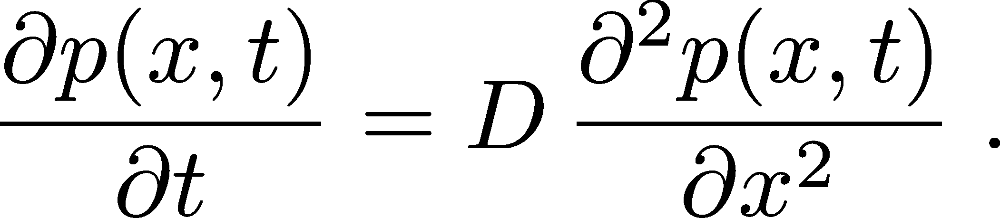 (1)
It is a remarkable connection between time and space deriviatives of the distribution that we will derive later and understand in some detail.Before studying the diffusion equation itself, we must have a firm grasp on the distribution $p(x,t)$. In simplest terms, if one has a collection of diffusing particles, each located at some $x$ value, $p(x,t)$ represents the histogram of those positions with some minor mathematical adjustments. Sometimes, to remind myself that this is a distribution of $x$ values valid at any (and all) fixed $t$, I write the function as $p(x; t)$. Mathematically, we need to be clear that $p(x,t)$ is a true distribution - so strictly speaking it is a probability density whcih is normalized so that the sum (integral) over all $x$ values is one at any fixed $t$ value:
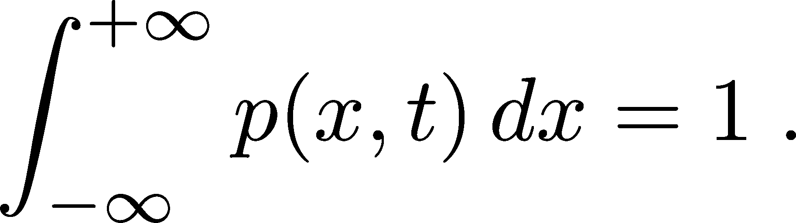 (2)
To say that $p$ is a density means that it is a probability per unit length (in one dimension). A trick for understanding units in an integral like (2) is to note that since the integral of $p \, dx$ is the simple/pure number $1$, which is dimensionless, then $p$ and $dx$ must have reciprocal units. You should think of $dx$ as a length, and so $p(x, t)$ must have units of inverese length - i.e., $p$ is a density.
It's very useful to understand the connection between the somewhat abstract quantity $p(x,t)$ and specific trajectories of individual particles. Define $x(t)$ be the $x$ position of a given particle (e.g., molecule) at every $t$ - i.e. the particle's trajectory. If we have many particles and make a histogram of all their positions at every $t$ value, we obtain $p(x,t)$. It may seem that we're retaining all the information from the trajectories, but in fact creating a histogram is an averaging process that discards information. Specifically, $p(x,t)$ does not tell us where the density (probability) at a given $x$ value at a given time came from - e.g., from left or right or some combination. We cannot take $p(x,t)$ alone and re-create the trajectories that led to it, though the trajectories do fully determine $p(x,t)$. This is not to say that $p$ is without value - it's very important! - but we should understand its limitations. Some of these ideas are sketched in the figure, where "prob" is the same thing as $p$.
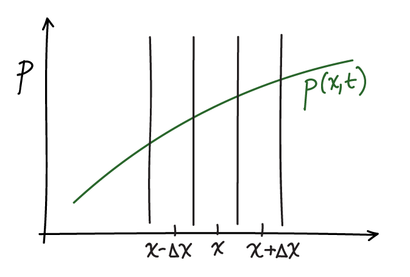
Using basic calculus and probability ideas, we can derive the diffusion equation. To do so, we follow the strategy described in the article by Metzler and Klafter with slight modifications. The basic idea is to construct a simple diffusion process that we observe at time $t$ and a very short time later at $t+\Delta t$. In that interval we will make the following minimal assumptions: (i) A fraction $q$ of the probability in any spatial interval of width $\Delta x$ diffuses out of the interval and the fraction $1-q$ remains; these fractions will depend on both $\Delta x$ and $\Delta t$. (ii) Because simple diffusion is non-directional, of the probability that leaves any interval, an equal amount diffuses in each direction. (iii) The time interval $\Delta t$ is so short that all the probability that leaves any spatial interval goes to the two neighboring intervals. These assumptions imply the following equation:
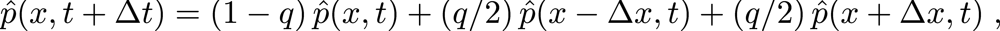 (3)
where $\phat(x,t) \simeq p(x,t) \Delta x$ is defined to be the probability contained in the $\Delta x$ interval about $x$.Implicit in the three assumptions above, importantly, is the notion that probability flows at different points in space do not interfere with one another. That is, probability can flow left or right regardless of how much probability (if any) is already present at particular locations. This is idealized behavior and can be considered the continuum analog of (discretized) mass action kinetics or the dynamical analog of the assumptions underlying ideal gas thermodynamics.
To make progress toward deriving the diffusion equation, we only need to substitute in Taylor expansions for the various $\hat{p}$ expressions. These are
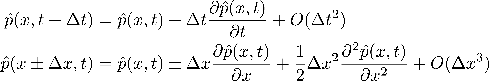 (4)
(In the last expansion, the left-side positive sign matches the right-side + and likewise for the negative signs.) If we substitute these into (3) a number of the terms cancel. The $\phat(x,t)$ on the left cancels with $[(1-q) + 2(q/2)] \, \phat(x,t)$ on the right. On the right side, the two terms linear in $\Delta x$ cancel with one another because of the opposite signs in $p(x \pm \Delta x, t)$ - which mathematically is why there is no first-derivative term in the diffusion equation.What remains after the substitution is something that resembles (but is not yet) the diffusion equation. If we retain only the lowest order terms in $\Delta t$ and $\Delta x$, because the others will be negligible as these increments approach zero, we have:
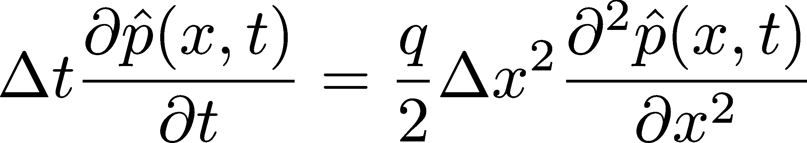 (5)
If we recall that $\phat$ is defined to be the probability in a $\Delta x$ interval based on the function $p$, then to lowest order in $\Delta x$, that probability is just the area of the corresponding rectangle: $\phat(x,t) = p(x,t) \, \Delta x + O(\Delta x^2)$. When we substitute this in to (5), the resulting $\Delta x$ factors cancel on both sides because $\Delta x$ is a constant and we obtain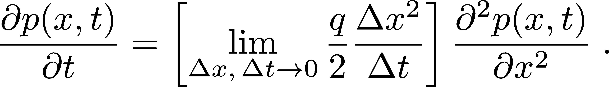 (6)
We know these derivatives do not vanish, so the limit evidently leads to a finite value and, in particular, the bracketed expression becomes the diffusion constant $D$ seen in (1).We can now see why there is no first derivative in $x$ occurring in the diffusion equation. Really it stems from the most basic diffusion ideas embodied in our starting relation (3): each interval 'emits' probability equally to the left and right. Thus, each interval will receive probability from the left and right ... which will be equal if there is no curvature to the distribution. In other words, the approximate linearity in a small interval of a smooth function, $p$ or $\phat$, means that contributions from the left and right entering an interval will exactly average to the value already in the interval - and will exaclty balance the amount that leaves. First-derivative effects therefore are 'invisible' in diffusion. This is not to say that there would be no motion on the molecular scale - only that the molecules entering from left and right will average to the number leaving the interval based a linear gradient.
A technical comment on $q$. Recalling that $q$ represents the fraction diffusing out of a $\Delta x$ interval in time $\Delta t$, we can imagine two limits. If $\Delta x$ is finite, then $q$ will vanish with $\Delta t$ because there won't be time for probability to leave. On the other hand, if $\Delta t$ is finite, then $q$ will approach unity as $\Delta x$ vanishes because there is negligible chance to remain in a vanishingly small interval. Given that we know the bracketed expression in (6) must not vanish, we can surmise that $q \to 1$ as the limit is taken.
The assumption we can start out with is that net rate of flow at any point in space is proportional to - i.e., a simple multiple of - the gradient of the probability density $p$. In one dimension, the gradient is simply the derivative $\partial p / \partial x$, so the assumption is that
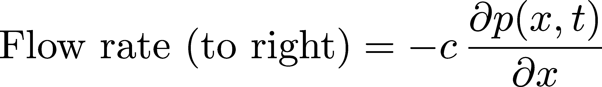 (7)
where $c>0$ is a constant whose value is unknown at present. We know there must be a negative sign in the proportionality because if probability is increasing with $x$, the flow will move to the left as diffusion evens out the probability distribution.Knowing the flow is useful because we can use simple ideas of 'continuity' which is just the conservation of probability - think of the conservation of energy. In a given $\Delta x$ increment, some probability will flow in and some will flow out in a time interval $\Delta t$; the difference between the two must be the change in probability $\Delta \phat$ for that increment. The flow out will be the net flow at the increment of interest - i.e., the flow rate (7) multiplied by the time increment $\Delta t$. The flow in will come from the neighboring increment having a higher probability - which we'll assume for now is on the left (at $x - \Delta x$) opposite to what's shown in our picture above. And of course we are assuming those flows take the mathematical form given in (7). Putting all this together in an equation, we have
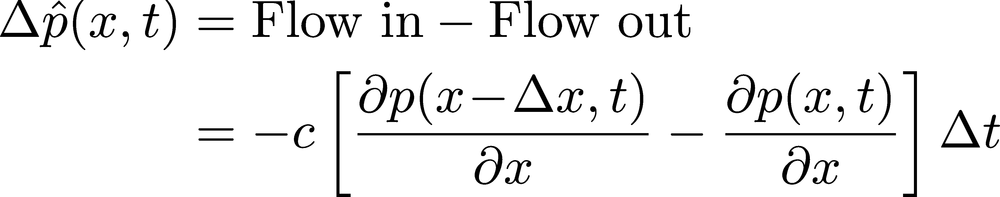 (8)
From here, two steps are needed: a Taylor expansion of the partial derivative of $p$ at $x-\Delta x$ and for us to recall that $\phat(x, t) \simeq p(x, t) \Delta x$, so $\Delta \phat \simeq \Delta p \, \Delta x$. The Taylor expansion of a first derivative retaining the linear term $\Delta x$ yields the desired second derivative, as you can check for yourself. The first term of the Taylor expansion is the partial derivative itself, which cancels in (8) leaving
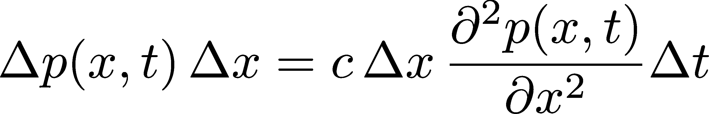 (9)
This becomes the diffusion equation after we cancel out $\Delta x$ then divide through by $\Delta t \to 0$, and evidently $c = D$ is the diffusion constant itself. You can check that we would have obtained the same result assuming higher probability to the right at $x+\Delta x$ in Eq. (8).
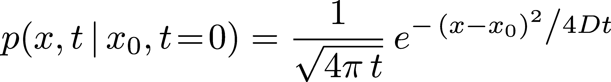 (10)
where the prefactor is essential to ensuring that the distribution is normalized according to (2) at all times. You can also check that if you don't include the prefactor, the distribution (10) will not obey the diffusion equation! Relations like (10), which provide the response to an initial point 'impulse', are called Green functions.From the form of Eq. (10), we can read off a key property - namely the standard deviation $\sigma$ or its square, the variance. To do this, we need to recall the general form of a Gaussian (normal) distribution as $(\sqrt{2 \pi} \sigma)^{-1} \exp{[ -(x-x_0)^2 / 2 \sigma^2 ]}$, which indicates that for diffusion the variance is $\sigma^2 = 2 D t$. The linear growth of the variance with time is what enables estimation of the diffusion constant from a plot of the mean-squared distance vs. time derived from the behavior of single particle trajectories.
Because the probabilty at any given point will spread like a Gaussian over time according to Eq. (10) and because we know that in simple diffusion theory probability flows don't interfere with one another, we can then predict how an arbitrary distribution will evolve in time. In essence, each point in an initial distribution $p(x_0, t\!=\!0)$ can be viewed as 'emitting' a Gaussian that will spread in time. Mathematically, we can therefore write an expression for the resulting probability at an arbitrary later time:
 (11)
(11)
It's worth recalling why diffusion behavior is Gaussian in the first place. As noted on the basic diffusion page, the central limit theorem tells us that any process which amounts to a sum of small increments - like the molecular collisions underlying diffusion - will exhibit Gaussian behavior once enough increments are included. So it's fair to say that diffusion won't be exactly Gaussian over very small time windows, which don't include enough molecular collisions. You may wonder, then, how we derived the diffusion equation - for which the Gaussian (10) is an exact solution at any $t$. The answer, as with any calculation, is that the result depended on our assumptions. In essence, our derivation assumed diffusion-like (non-inertial) behavior even at the shortest time and space scales, which is not really true.
Ideal diffusion assumes independence of steps from one another (e.g., equal probability to go left or right, regardless of previous step) and that alone implies linearity with $t$ of the MSD based on the variance sum rule. Let's see why. We start by writing a discretized version of our trajectory as a list of $N\!+\!1$ points separated by some time increment $\Delta t$; it will look like this: $\{x_0, x_1, x_2, \dots, x_N\}$. We can then simply define the increments $\Delta x_1 = x_1 - x_0$, $\Delta x_2 = x_2 - x_1$ ..., which are assumed independent in diffusion. Independence implies that certain quantities must be zero, like the following average:
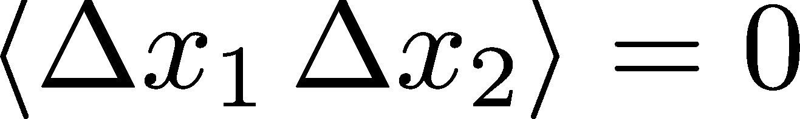 (12)
To see why this vanishes, first recall we are averaging over all possible diffusion trajectories. Imagine we select a subset of trajectories in which $\Delta x_1$ has some (arbitrary) fixed value, and we examine all the $\Delta x_2$ values in this subset of trajectories. Since $\Delta x_2$ is independent of $\Delta x_1$, there will be an equal number of positive and negative $\Delta x_2$ values - in fact, distributed as a Gaussian - so we know the average must vanish for any fixed $\Delta x_1$. If we now observe that the full average in (12) is simply over all possible $\Delta x_1$ values, then the overall average is also zero.With this result in hand we can simply do the calculation based on the definition of the MSD.
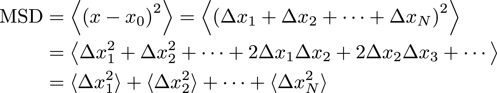 (13)
In the calculation above, the second line is obtained from the first simply by multiplying out all the terms and the third line is obtained from the second using the fact that all the cross-terms vanish, as we saw previously in (12).Because the MSD is a sum of the mean-squared deviations (variances) of the individual increments - and the number of increments is proportional to the elapsed time - the MSD itself must be linear in time. This linearity of the MSD is then most fundamentally a property of (linearly) independent increments, which do occur in diffusion but are not specific to diffusion.
Here we will derive the mathematical machinery for describing the time evolution of (i.e., differential equation for) the probability distribution of a one-dimensional system operating in the presence of a spatially varying potential energy function $U(x)$. All the key conceptual and mathematical issues can be addressed in one dimension. You'll recall from high-school physics that a spatially varying potential implies forces: force is minus the derivative of the potential $f = -dU/dx$.
We'll start with the analog of Eq. (3), but with two adjustments. First, we'll assume from the beginning that all probability leaves a given $\Delta x$ interval over the time increment $\Delta t$, implying $q=1$ as discussed above. Second, because of the forces present, we can no longer assume that equal fractions of probability go left and right, and indeed these fractions must depend on position in general. Following Metzler and Klafter, we'll call the fractions $A(x)$ and $B(x)$, with $A(x) + B(x) = 1$ for any $x$. Our starting point is therefore
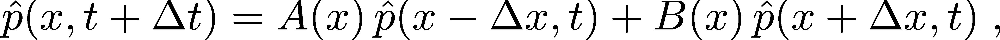 (14)
To make progress, as before, we substitute our Taylor expansions (4) into the basic rule (14). Taking advantage of $A+B=1$, we obtain
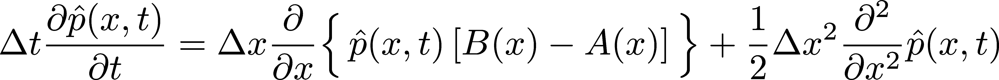 (15)
This is not a very informative equation because we still don't know what $A$ and $B$ are!To finish the derivation, we must exploit a basic principle from statistical mechanics - namely, that a system without inputs or outputs, as is the case for us, will reach equilibrium at long enough times ($t \to \infty$) when all non-equilibrium processes have relaxed away. Because equilibrium is a steady state, all time derivatives will be zero, and in particular $\partial \phat / \partial t = 0$. Statistical mechanics also teaches us that the states of any system in equilibrium will follow a Boltzmann-factor distribution, so that $\phat(x) = \phat(x, t \to \infty) = c \, \mbox{exp}[-U(x) / k_B T]$ where $c$ is an unknown constant, $U$ is the potential energy function, $k_B$ is Boltzmann's constant, and $T$ is the absolute temperature. Based on the steady-state condition and the Boltzmann factor, Eq. (15) becomes
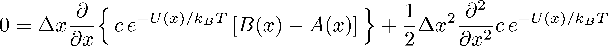 (16)
After taking the indicated derivatives and cancelling constants, we find
 (17)
(17)
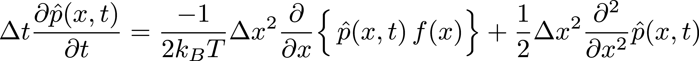 (18)
Using the same limiting procedure as we did for the diffusion equation above, we now obtain the Smoluchowski equation
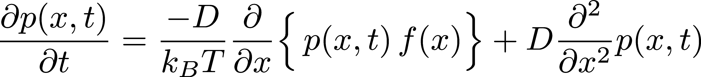 (19)
which, as promised, tells us how the probability distribution of a diffusive process evolves in time in the presence of forces (a potential energy function). For your information, the Smoluchowski equation is a special case of the more general Fokker-Planck equation which typically includes velocity $v$ degrees of freedom, so the distribution is over $x$ and $v$ but the two equations are conceptually identical.I consider the Smoluchowski equation to be a landmark result of statistical mechanics. In a sense, it's all you need to know about diffusion - because it includes forces and so governs all diffusive scenarios of interest. Its general form in higher dimensions applies both to 'real-space' diffusion where particles (perhaps proteins on a cell surface) are moving in two or three dimensions as well to configurational motion (e.g., of a protein's configuration). And the one-dimensional version (19) is sufficient for understanding those ideas, so you can now consider yourself knowledgeable in non-equilbrium statistical mechanics.
Always remember that $p(x,t)$ is nothing more than a histogram made by averaging over physical trajectories. In the present case, those trajectories will be affected by forces, but $p$ is still just a histogram. Think concretely to guide yourself through new abstract concepts.
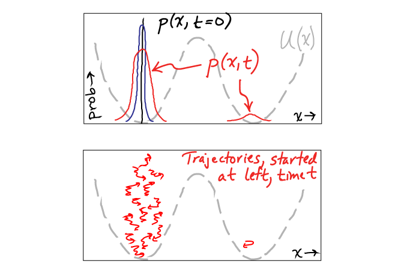
The figure above shows an example of a trajectory distribution initialized at $t=0$ in the left basin of a two-basin energy landscape $U(x)$. At some later time $t$, most of the trajectories are still in the left basin, and only one has made the improbable transition over the barrier to the right basin. The probability distribution $p(x,t)$ represents an average over many such trajectories, though I can only a draw a few in the figure.
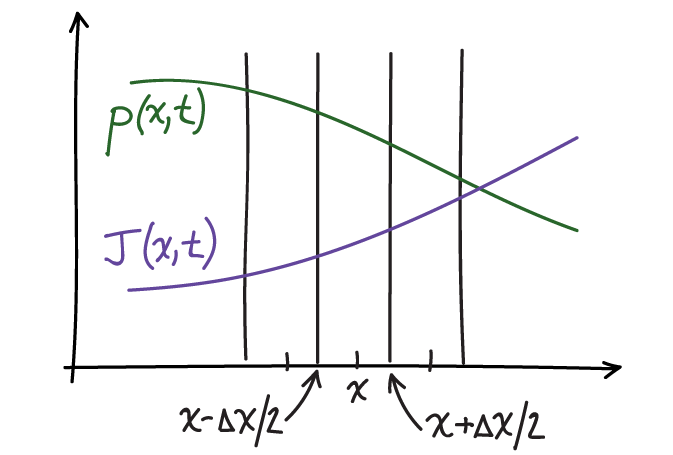
To formalize the key idea mathematically, we define $J(x,t)$ to be the net current of probability flowing to the right (positive $x$ direction) at time $t$. From a trajectory picture, current could be calculated from the net fraction of trajectories in an ensemble which flow past a given position per unit time - i.e., subtracting the left-movers from the right-movers. This current can vary with position at any fixed time, but if it does, that means probability is being added to some regions and depleted from others. Conversely, if the current is constant in space, an equal amount of probability is leaving and entering each region ... so the probability won't change unless there is a source or sink present. And here we're assuming there are no sources or sinks.
In terms of $J(x,t)$, Eq. (8) becomes
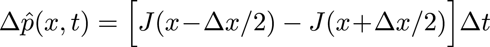 (20)
If we divide both sides of this equation by $\Delta t \, \Delta x$ and recall that $\phat(x, t) \simeq p(x,t) \Delta x$ ... and then finally take the limit of small $\Delta t$ and $\Delta x$, we obtain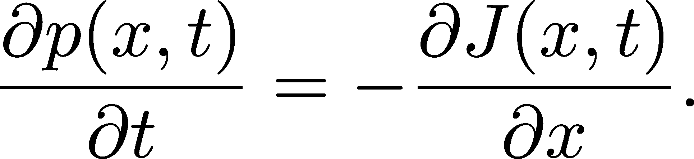 (21)
where we used the definition of the derivative on the right-hand side. This continuity equation is a general relation that applies in the presence or absence of forces - we did not make any assumptions here about forces.We can learn more about the current by comparing the continuity equation (21) with the Smoluchowski equation (19). By comparing right-hand sides, we find
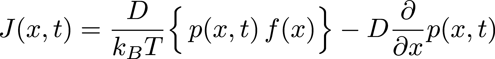 (22)
In the purely diffusive case of zero forces ($f(x) = 0$), the current is just proportional to the gradient of $x$, as already discussed prior to Eq. (7). When forces are present, there is an addition "drift" current proportional to the force and the probability. The drift of probability in proportion to the force precisely mimics the behavior expected for overdamped Langevin dynamics.